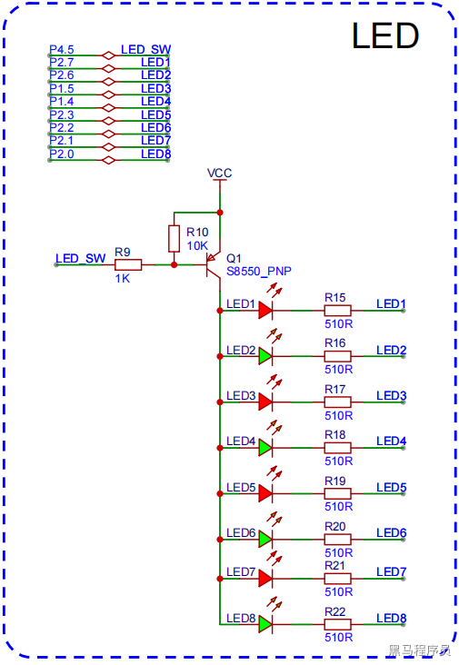
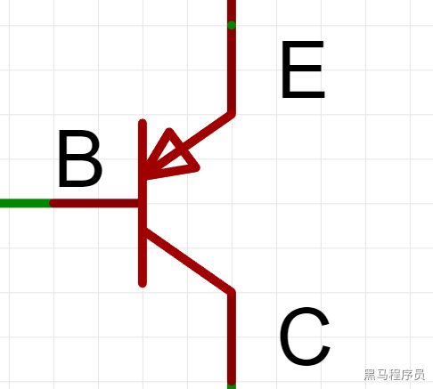
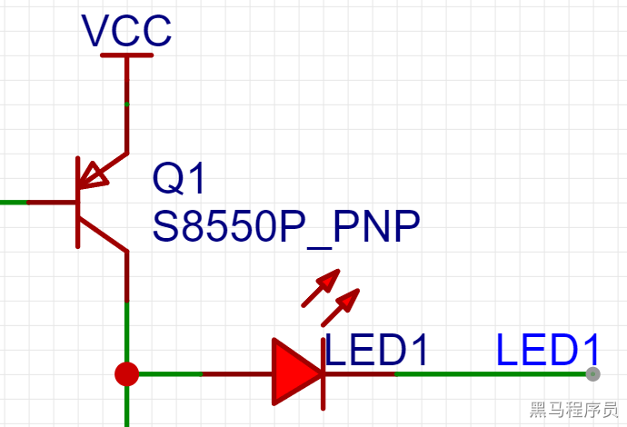

<!DOCTYPE lake>
<h2 data-lake-id="N40TK" id="N40TK"><span data-lake-id="u860940b9" id="u860940b9">学习目标</span></h2><ol list="uf9cb617c"><li data-lake-id="u9f956e1e" fid="u4c9a4402" id="u9f956e1e"><span data-lake-id="ued54d542" id="ued54d542">熟悉原理图设计</span></li><li data-lake-id="u6e72ba59" fid="u4c9a4402" id="u6e72ba59"><span data-lake-id="u09a3bd90" id="u09a3bd90">熟悉对应引脚功能</span></li><li data-lake-id="u405d77ce" fid="u4c9a4402" id="u405d77ce"><span data-lake-id="u5bda0a9e" id="u5bda0a9e">能够使用IO控制多个LED开关</span></li><li data-lake-id="u54293f1f" fid="u4c9a4402" id="u54293f1f"><span data-lake-id="ub63d431a" id="ub63d431a">能够制作流水灯</span></li></ol><h2 data-lake-id="Ame7P" id="Ame7P"><span data-lake-id="u98ca1343" id="u98ca1343">学习内容</span></h2><h3 data-lake-id="M8OSx" id="M8OSx"><span data-lake-id="uee8f4fb9" id="uee8f4fb9">原理图</span></h3><p data-lake-id="u65150399" id="u65150399"></p><h3 data-lake-id="nDBev" id="nDBev"><span data-lake-id="ue2d9fdec" id="ue2d9fdec">控制分析</span></h3><h4 data-lake-id="zlyve" id="zlyve"><span data-lake-id="u65790a3f" id="u65790a3f">S8550 PNP 特性</span></h4><p data-lake-id="ua4524983" id="ua4524983"></p><p data-lake-id="u73fefac7" id="u73fefac7"><span data-lake-id="ub3f59738" id="ub3f59738">B: base,  基极。（理解：基于/根据 这个条件做什么事情）</span></p><p data-lake-id="u817beafb" id="u817beafb"><span data-lake-id="u6209120a" id="u6209120a">E: emitter, 发射极。（理解：发射端）</span></p><p data-lake-id="uf4260d2d" id="uf4260d2d"><span data-lake-id="u1fec04ab" id="u1fec04ab">C: collector, 集电极。（理解：收集电的区域，用电的器件在这个区域）</span></p><p data-lake-id="u9c2b541e" id="u9c2b541e"><span data-lake-id="u97975931" id="u97975931">PNP型三极管，E极为输入端，C极为输出端，B极为控制端</span></p><p data-lake-id="u1b2df6a3" id="u1b2df6a3"><strong><span data-lake-id="uffe1d669" id="uffe1d669">B极 为高电平时，E极到C极的电路截止，无法导通。</span></strong></p><p data-lake-id="u5491e856" id="u5491e856"><strong><span data-lake-id="ub81367a0" id="ub81367a0">B极 为低电平时，E极到C极的电路打开，正常导通。</span></strong></p><h4 data-lake-id="I6c08" id="I6c08"><span data-lake-id="uca7a746b" id="uca7a746b">开关控制</span></h4><p data-lake-id="u9424c20b" id="u9424c20b"><span data-lake-id="udb88c808" id="udb88c808">通过引脚 </span><code data-lake-id="uf93ce4ba" id="uf93ce4ba"><span data-lake-id="u98a7cc78" id="u98a7cc78">LED_SW</span></code><span data-lake-id="u59681106" id="u59681106">来控制 B极是否为高低电平来控制是否导通</span></p><h4 data-lake-id="KNKwM" id="KNKwM"><span data-lake-id="u821240fc" id="u821240fc">LED控制</span></h4><p data-lake-id="u295f24b7" id="u295f24b7"></p><p data-lake-id="uc19dc275" id="uc19dc275"><span data-lake-id="u0d2e6236" id="u0d2e6236">通过LED的负极控制灯是否亮。如果负极为低则亮，负极为高则不亮。</span></p><p data-lake-id="u4de18093" id="u4de18093"><br/></p><h3 data-lake-id="pzRcR" id="pzRcR"><span data-lake-id="ueb5b8e7a" id="ueb5b8e7a">功能设计</span></h3><h4 data-lake-id="sMEPy" id="sMEPy"><span data-lake-id="u1d1a473d" id="u1d1a473d">点亮LED</span></h4><p data-lake-id="u68b398c1" id="u68b398c1"><span data-lake-id="u1f6fb0e0" id="u1f6fb0e0">点亮灯泡1</span></p><h5 data-lake-id="foh1F" id="foh1F"><span data-lake-id="uca267b9b" id="uca267b9b">几种GPIO模式</span></h5><ol list="uc4b3eaf3"><li data-lake-id="ud052f433" fid="u1e26aa08" id="ud052f433"><span data-lake-id="u7d50b55e" id="u7d50b55e">准双向口，也称为弱上拉模式，可做输入和输出操作，电流小，通常作为信号功能使用</span></li><li data-lake-id="ufa62367c" fid="u1e26aa08" id="ufa62367c"><span data-lake-id="ua736c884" id="ua736c884">推挽输出，也称为强上拉模式，作为输出操作，电流持续，作为功率输出</span></li><li data-lake-id="uba9c3f40" fid="u1e26aa08" id="uba9c3f40"><span data-lake-id="uf145fde5" id="uf145fde5">开漏输出，可做输入和输出操作，需要外部提供上拉电阻</span></li><li data-lake-id="u9178dc19" fid="u1e26aa08" id="u9178dc19"><span data-lake-id="u03b325c2" id="u03b325c2">高阻输入，电流无法输入，但是可以外部输入电平会拉高或拉低其位寄存器，用于数模转换</span></li></ol><h5 data-lake-id="qFxE7" id="qFxE7"><span data-lake-id="u5d5f9dd3" id="u5d5f9dd3">三极管特点</span></h5><p data-lake-id="u2993df48" id="u2993df48"><span data-lake-id="u3765cda2" id="u3765cda2">三极管是电流控制的器件，如果需要三极管导通或是关闭，需要持续给B极输入电流。（相对于mos管而言，三极管功耗较大，mos管耗电要少很多）</span></p><h5 data-lake-id="yaKOB" id="yaKOB"><span data-lake-id="ud949de32" id="ud949de32">示例代码</span></h5><span class="yuque-card-unsupported">[codeblock]</span><p data-lake-id="u82df03fd" id="u82df03fd"><br/></p><h4 data-lake-id="ieQPI" id="ieQPI"><span data-lake-id="ub617b86b" id="ub617b86b">走马灯</span></h4><p data-lake-id="uf01d1c75" id="uf01d1c75"><span data-lake-id="u2149473a" id="u2149473a">实现灯的顺序点亮</span></p><span class="yuque-card-unsupported">[codeblock]</span><p data-lake-id="uf4ca3fa4" id="uf4ca3fa4"><br/></p><h2 data-lake-id="FiHmp" id="FiHmp"><span data-lake-id="ufe0c1b8a" id="ufe0c1b8a">练习题</span></h2><ol list="u2e4c0ec1"><li data-lake-id="u71427198" fid="u7b916aca" id="u71427198"><span data-lake-id="u89ec70b9" id="u89ec70b9">实现单个LED灯的点亮</span></li><li data-lake-id="ud431d6bf" fid="u7b916aca" id="ud431d6bf"><span data-lake-id="uf13991cf" id="uf13991cf">实现走马灯</span></li><li data-lake-id="uaed82ec8" fid="u7b916aca" id="uaed82ec8"><span data-lake-id="uc8f7185f" id="uc8f7185f">通过串口控制，实现左转弯流水灯和右转弯流水灯效果</span></li></ol><ol data-lake-indent="1" list="u2e4c0ec1"><li data-lake-id="ufefa7494" fid="u7b916aca" id="ufefa7494"><span data-lake-id="u646e7ab7" id="u646e7ab7">串口发送数字0，左转弯</span></li><li data-lake-id="u43faa565" fid="u7b916aca" id="u43faa565"><span data-lake-id="ubdf0a8a7" id="ubdf0a8a7">串口发送数字1，右转弯</span></li></ol><p data-lake-id="u3bf2d567" id="u3bf2d567"><span data-lake-id="u5061ceff" id="u5061ceff">​</span><br/></p>